Welke materialen ik gebruik:
Ik gebruik voor het maken van de armbandjes altijd katoengaren. Die koop ik meestal bij Sostrene Grene. Ik vind dat zij mooie kleuren katoengaren verkopen en ze kosten maar €1,82 per bolletje. Ik vind dit een goede prijs voor katoengaren. Hieronder staan een paar voorbeelden, als je op de afbeelding klikt kom je bij de website waarop je ze kunt kopen:
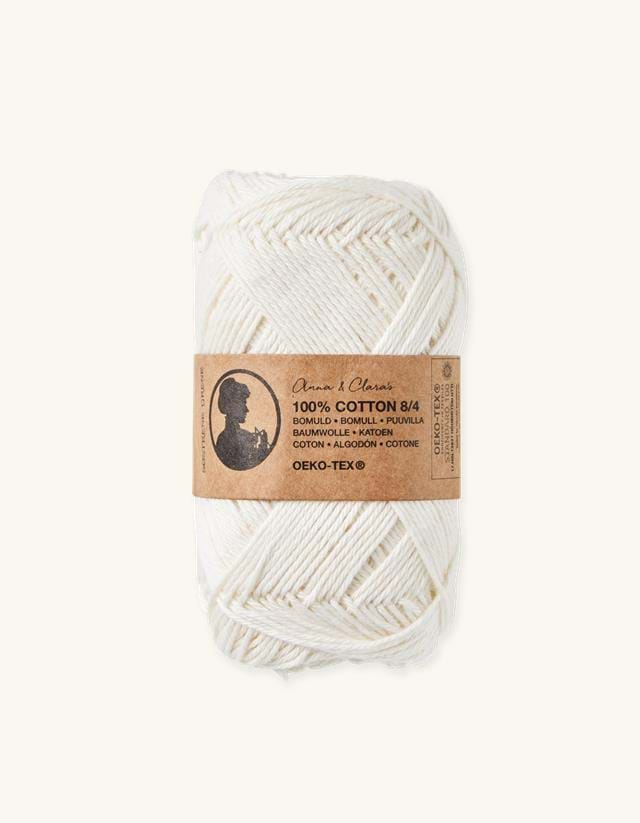 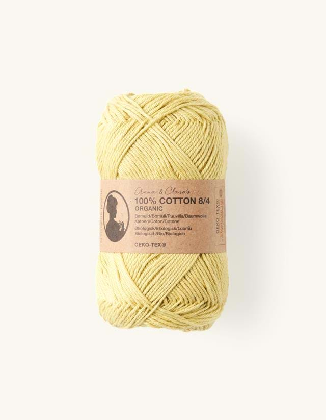 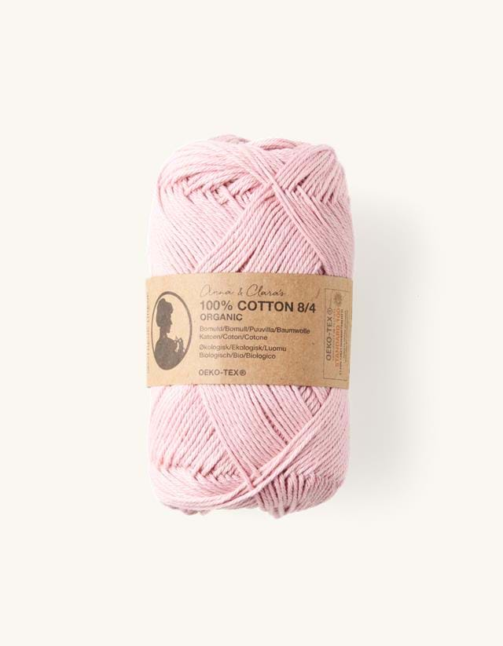 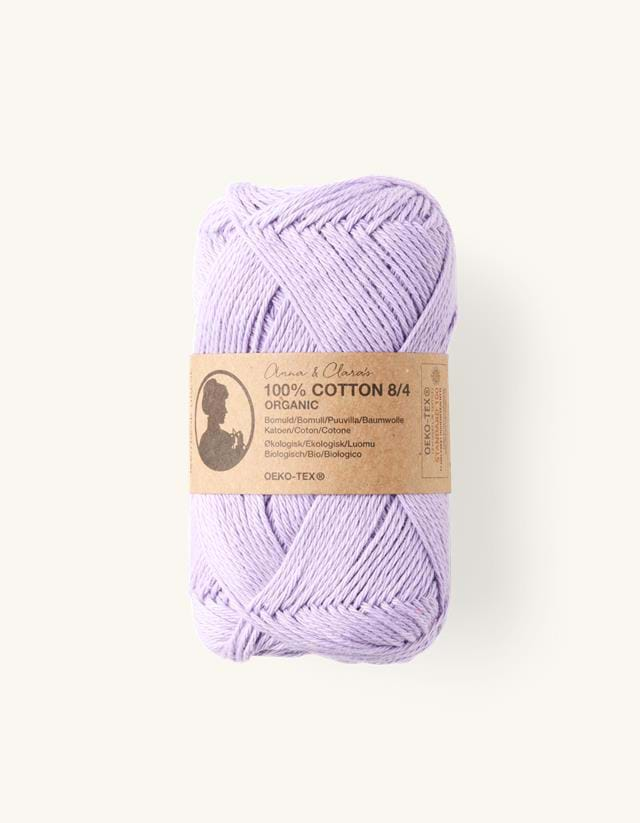 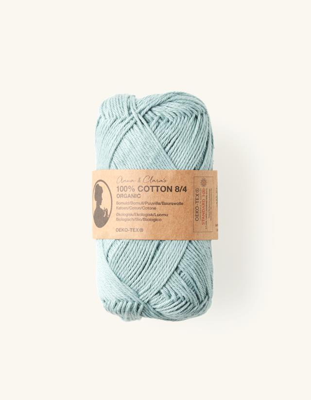 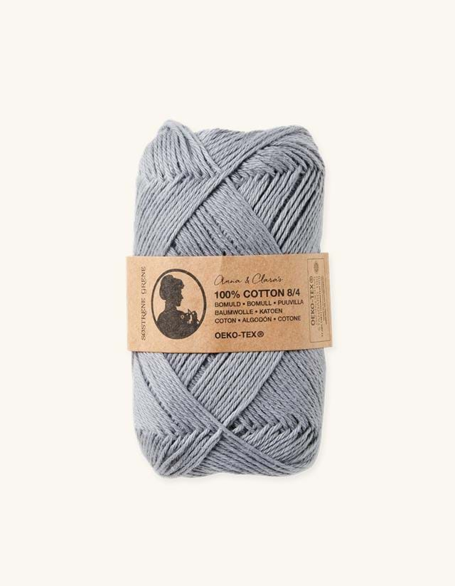Verschillende alternatieven:
Alternatieven voor de katoengaren van de Sostrene Grene zijn de haakgaren van de Hema. Deze garen zijn wel een stuk duurder. Ik gebruik daarom liever de katoengaren van de Sostrene Grene. De Hema heeft ook iets minder keuze in kleur, maar de keuren die er zijn vind ik heel erg mooi.
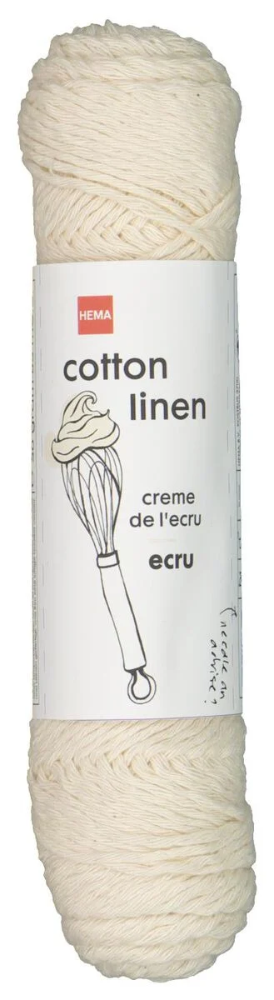 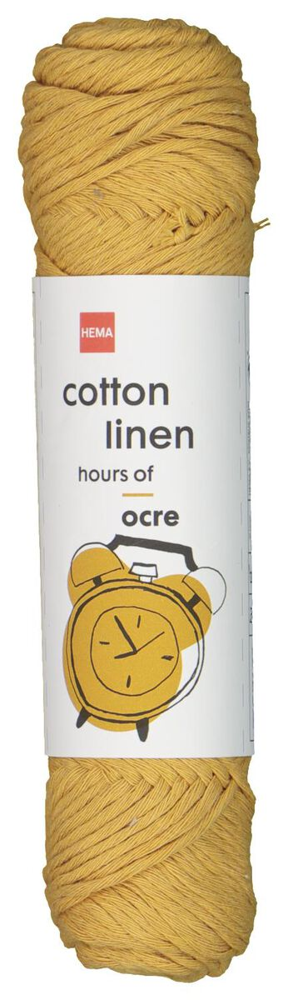 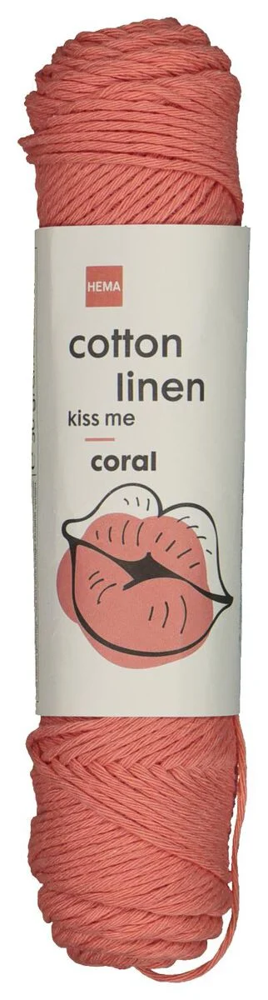 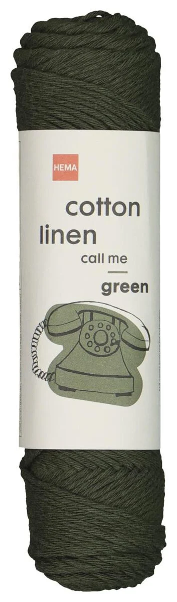 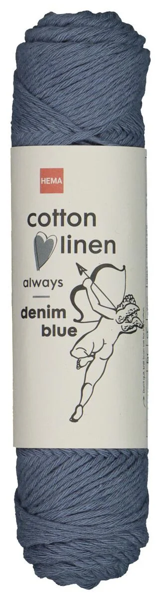 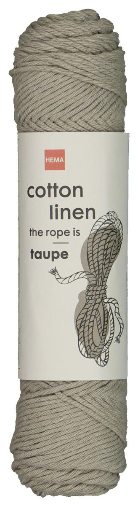Andere alternatieven zijn de katoengaren van de Action. Deze kleuren vind ik persoonlijk minder mooi dan die van de Sostrene Grene en de Hema. Deze bolletjes zijn ook een stuk kleiner, maar ze zijn wel goedkoper.
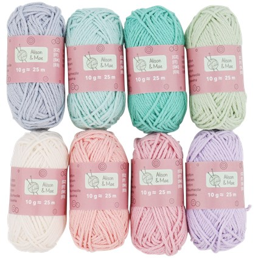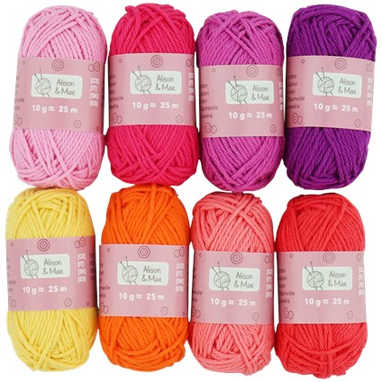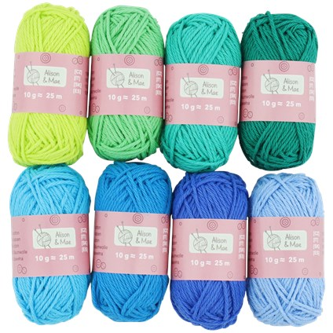